Film-Based English Lesson · Love Actually (2003) · Gemini Notebook Deck
It is one of the most quietly radical openings in modern cinema: an entire ensemble film about love that begins and ends inside a single building, the arrivals hall of Heathrow Airport, where strangers embrace and the camera drifts from hug to hug like a witness to small miracles. The presentation deck “Love, Actually: A Mosaic of the Heart” turns that famous airport bookend into a complete English lesson, built on the subtitle “A bittersweet portrait of love in all its awkward, hopeful, and heartbreaking forms.” Pay attention to how much emotional vocabulary hides inside that single line — awkward, hopeful, heartbreaking — because the whole deck that follows is, in essence, a guided tour through the language of feelings.
The material is a fifteen-card visual presentation assembled with Gemini Notebook, and it treats Richard Curtis’s 2003 ensemble comedy as a structured text for language learners. It maps the film’s ten interlocking storylines, dissects its most famous scenes, and then turns to harder questions of tone, criticism, and craft. Its educational value comes from the way it pairs every scene with precise, reusable English: the vocabulary of narrative structure (framework, epilogue, climax), the vocabulary of emotion (unrequited, closure, devotion), and the vocabulary of criticism (trope, agency, representation). Notice that this article quotes the deck’s own wording throughout, so every italicized line below is language you can lift and reuse in your own conversations about film — and about love.
The deck’s title card announces the film as “Love, Actually: A Mosaic of the Heart”, and it explains immediately what kind of portrait to expect: “A bittersweet portrait of love in all its awkward, hopeful, and heartbreaking forms.” The word bittersweet is the key that unlocks everything that follows, because the presentation refuses to treat romance as pure fairy tale. Instead, it frames the film as a collection of small, imperfect human moments that only become a complete picture when viewed together, like tiles in a mosaic.
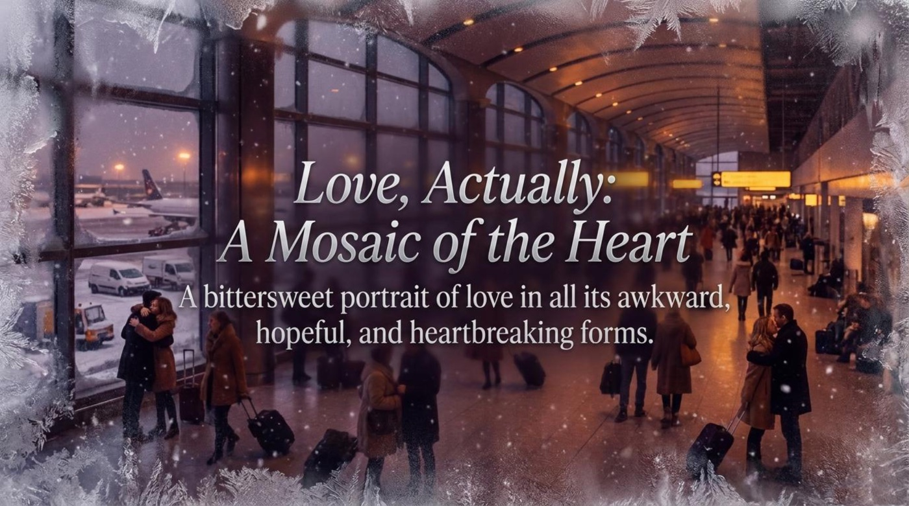
The deck identifies the film’s engine as time itself: “Director Richard Curtis uses the five-week pre-Christmas period as a rigid temporal framework, naturally uniting ten separate narratives and heightening the emotional stakes of each chance meeting.” It then lays that framework out on a visual timeline. Five weeks out, the mood is “the joy of arrivals. Chaotic introductions and the establishment of romantic stakes.” By mid-December comes “the quiet aches of loneliness, duty, and misunderstanding setting in as the deadline looms.” Christmas Eve delivers “the climax of bold gestures, devastating confessions, and sudden betrayals.” And one month later, the story closes with “the epilogue of airport reunions.” Notice the precise narrative vocabulary on display — framework, stakes, climax, epilogue — the same words screenwriters and critics use when they analyze any story.
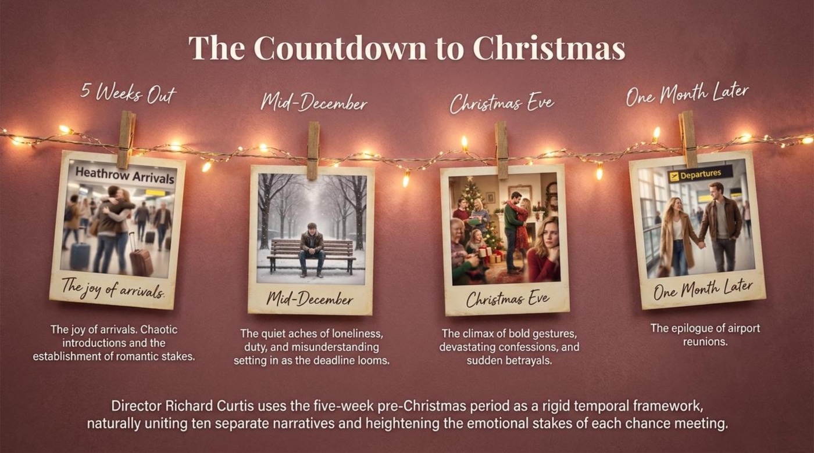
The deck’s character map carries the heading “Six Degrees of London” and draws the whole cast as a glowing network around the Prime Minister, with a handwritten note pointing into the web: “Love is the connective tissue.” Beneath the diagram, the card explains the craft behind the structure: “Ten interlocking love stories function as a masterclass in multi-narrative storytelling. Every character is tethered to another by blood, marriage, or employment, creating a cohesive universe where actions ripple across storylines.” The key point for a language learner is that relationship vocabulary — blood, marriage, employment, staff, stepson, best friend — is the glue of connected storytelling, and it is exactly the vocabulary this film rehearsed better than almost any other.
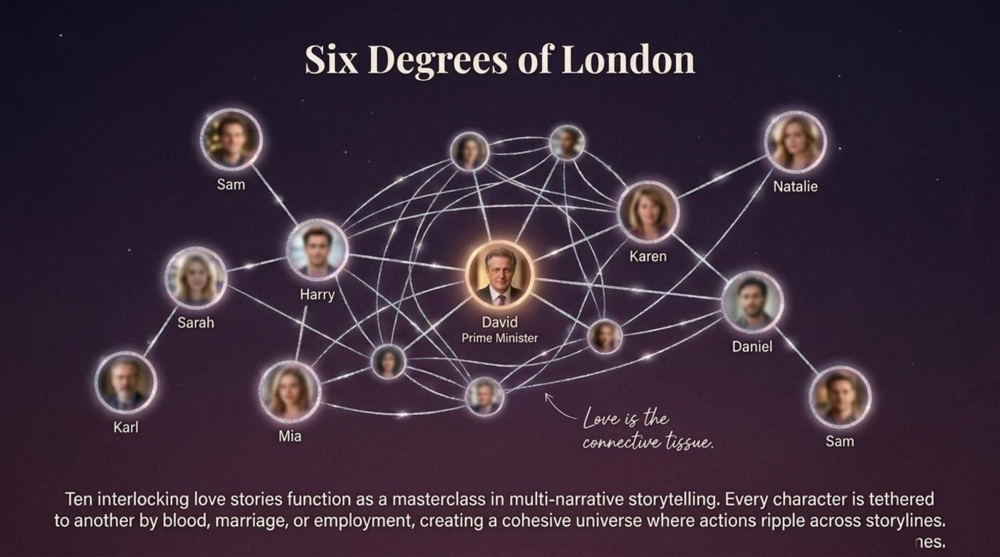
📌 A practical takeaway follows directly from this structure. When you retell a film, an event, or even your own week in English, borrow the deck’s technique: anchor the story to a deadline, name the relationships out loud, and let small actions ripple forward. It should be noted that learners who practice with a visible timeline (“five weeks out… by mid-December… on Christmas Eve… one month later”) produce noticeably cleaner narratives, because time markers do the grammatical work of tense and sequencing for them.
The deck devotes a double card to the film’s two great “beginning” stories, under the banner “The Language of Beginnings.” On the political side, it describes David and Natalie as “Crossing boundaries of class and politics,” where “a Prime Minister stands up to a bullying superpower to defend a junior staff member, culminating in a doorway confession.” On the personal side, it describes Jamie and Aurélia as “Crossing boundaries of geography and language,” where “a heartbroken writer and a Portuguese housekeeper prove connection transcends words, culminating in a bilingual proposal.” Both arcs begin with an imbalance of power — one of rank, one of language — and both end with the weaker party suddenly holding all the power of the moment.
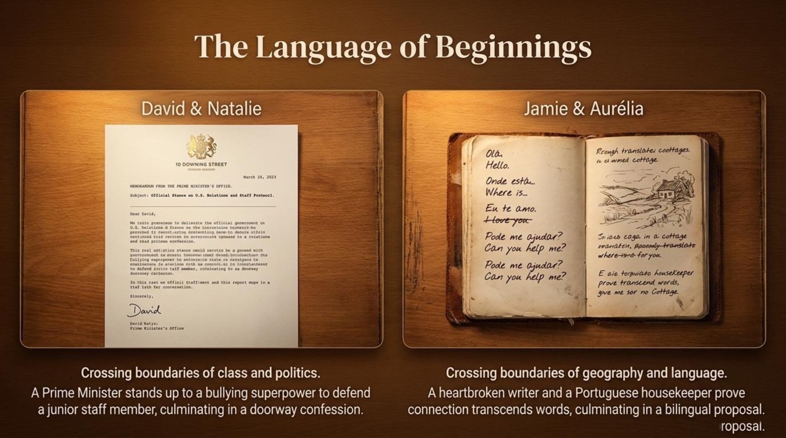
The most instructive object in the whole presentation is Jamie’s battered notebook, which the deck renders in careful handwriting: “Olá — Hello.”, “Onde está… — Where is…”, “Eu te amo. — I love you.” The card’s caption explains the payoff: the couple’s eventual proposal works precisely because each of them has been quietly studying the other’s words. Remember that this notebook is itself a portrait of language learning: small memorized phrases, practiced in private, waiting for one moment when they matter enormously. 💡 The lesson for the reader is direct — keep a phrase notebook of your own, write the foreign phrase on one side and the honest English equivalent on the other, and fill it with phrases you would actually need at a doorway, an airport gate, or a dinner table.
The deck gives Mark’s famous scene its own card, titled “To Me, You Are Perfect,” beside a photograph of the cue cards and the wedding videotape. Its reading is strikingly mature: “The ache of unrequited longing. Mark’s silent confession to his best friend’s wife, Juliet, is a meditation on the necessity of closure.” The card continues: “It is the realization that sometimes love requires stepping aside, making a grand but final gesture, and telling oneself: ‘Enough. Now.’” Notice that the scene is presented not as a romantic triumph but as an act of closure — an ending deliberately performed so that life can begin again.
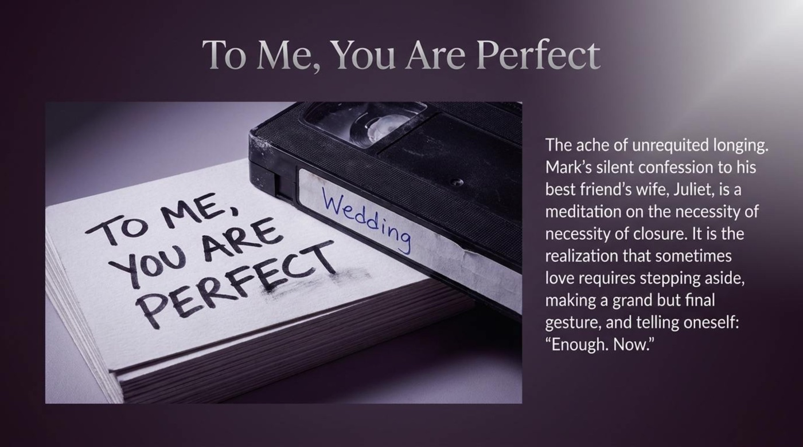
Immediately after, the deck turns to the film’s most painful phone with the card “When Love Competes,” showing a ringing mobile phone beside a hospital pass and the caption “The love we can’t walk away from.” Its text is unflinching: “The agonizing reality that some loves are superseded by older, deeper obligations. Sarah’s devotion to her institutionalized brother, Michael, costs her the office romance with Karl that she desperately wants.” Then comes the sentence that carries the whole card: “Every time the phone rings, romantic fantasy is pierced by the sharp, unavoidable reality of family duty.” The vocabulary here deserves careful study — devotion, superseded, obligations, pierced — because it names a conflict most films refuse to name: sometimes love competes with love, and duty wins.
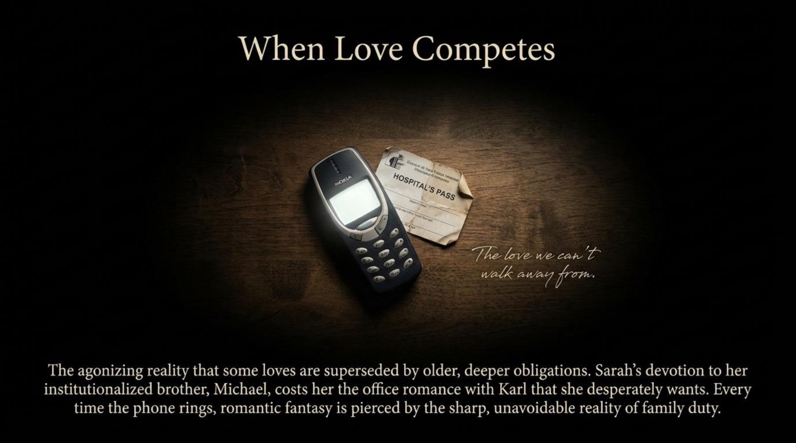
💡 A practical piece of advice emerges from these two cards. English handles painful topics best through precise, calm words rather than dramatic ones, so learn emotion vocabulary in contrasting pairs — longing against closure, fantasy against duty, confession against betrayal. Pairs like these give you ready-made sentences for real conversations about difficult choices, and they mirror how the deck itself balances each hopeful storyline against a heartbreaking one.
The deck’s card “The Quiet Devastation” places a Joni Mitchell Both Sides Now CD next to an open jewelry box, and calls Karen’s storyline “A masterclass in quiet suffering.” The text reads: “Karen’s discovery that her husband bought an expensive necklace for his secretary—while gifting her a Joni Mitchell CD—shatters her reality.” It then captures the famous bedroom moment in one long breath: “Emma Thompson captures the profound grief of a compromised marriage in a single, devastating bedroom retreat, weeping to the soundtrack of lost illusions before smoothing her bed and returning to her children.”
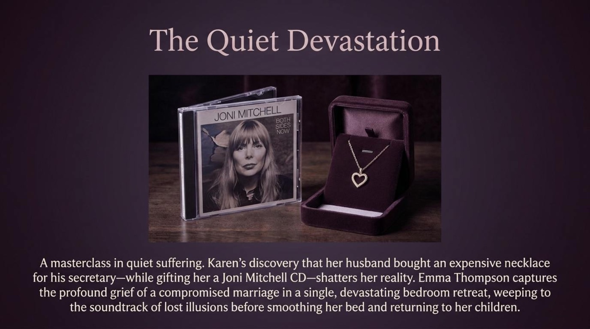
The language point is understatement — the distinctly English art of expressing enormous pain through small, controlled actions. Pay attention to the choreography the deck chooses to describe: the weeping, then the smoothing of the bed, then the return to the children. The scene needs almost no dialogue, and the deck’s vocabulary mirrors that restraint with quiet words like quiet, compromised, and lost illusions. Learners should notice that fluency includes knowing when not to raise the volume of your language.
The card “Endings and New Beginnings” shows a snow-covered bench with a photograph and a pair of drumsticks, and opens with a thesis: “Navigating the space left behind by death.” It continues: “Recently widowed Daniel bonds with his stepson, Sam, over the ‘total agony’ of a schoolboy crush. Their shared mission to win over Joanna via a drum performance at the school nativity becomes a testament to the film’s central thesis: Love is the only cure for the loss of love.” That final line is the closest thing the deck has to a motto, and it is worth memorizing as a complete, quotable sentence.
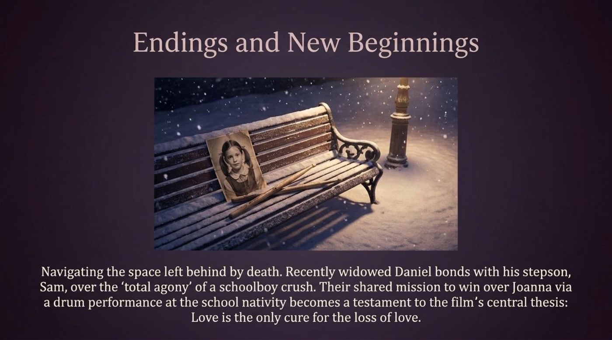
⚠️ It should be noted that the phrase “total agony” is deliberately childish, and that is exactly why it works. Sam’s schoolboy melodrama is funny because the register is wrong — the vocabulary of epic suffering applied to a crush — and the deck quotes it with affection. The practical advice is to collect idiomatic intensifiers the way actors collect props: total agony, completely hopeless, absolutely mortified. Exaggerated phrases like these are the natural music of teenage English, and using them at the right moment adds instant color and humor to your speech.
The deck labels its comedy card “Clumsy, Awkward, and Human,” decorated with a battered suitcase wearing a Wisconsin tag and a film clapperboard. It divides the film’s comedy into two case studies. “The Innocent — John and Judy. Finding pure, exceedingly polite connection while casually working completely nude as professional body stand-ins on a film set.” And then: “The Absurd — Colin Frissell. The aggressively naive belief that a British accent is a superpower, culminating in a surreal, wish-fulfillment trip to an American dive bar.” The card’s closing line frames the purpose of all this silliness: “A reminder that love is often ridiculous. These arcs provide necessary comedic levity, contrasting the profound grief of other storylines with the sheer, farcical absurdity of physical attraction.”
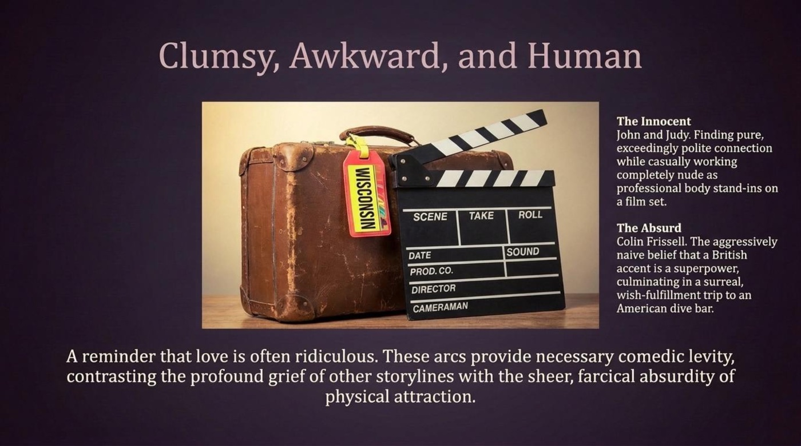
Notice the phrase levity in that quote — it names a real storytelling function, not just decoration. The practical advice is to treat comedy as a register you can learn, exactly like formal English. John and Judy’s scenes run on extreme politeness repeated in an inappropriate setting, and Colin’s scenes run on misplaced confidence. Both are learnable patterns: English speakers use exaggerated courtesy and cheerful self-belief as gentle humor every day, and the deck shows you the formula in action.
The card “The Love We Overlook” shows a cassette labeled “Christmas Is All Around — Take 1” beside two warm pints of beer, and it states one of the film’s deepest ideas: “The revelation that the most enduring love stories aren’t always romantic.” The text continues: “Aging, cynical rockstar Billy Mack realizes that his manager—his ‘chubby employee,’ Joe—is the actual love of his life.” And it ends with the image that crystallizes the theme: “In a film obsessed with grand romantic gestures, Billy’s decision to skip a glamorous celebrity party to get drunk with his oldest friend is the ultimate declaration of loyalty.”
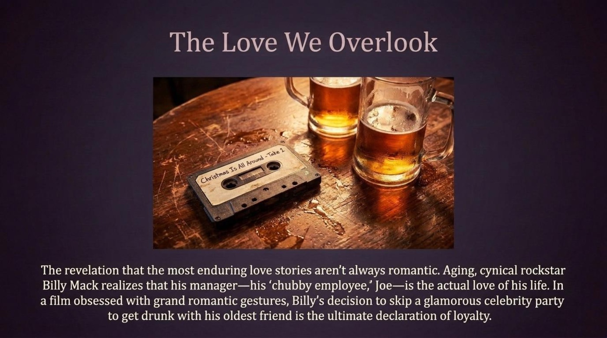
The key point here is that English distinguishes carefully between romantic love, family love, friendship, and loyalty, and the deck builds its argument by moving deliberately across those categories. For a learner, the useful move is to practice naming the exact type of bond in each storyline — a spouse, a stepson, a brother, a manager, a best friend’s wife — because precision in relationship nouns forces precision in the verbs and adjectives that accompany them.
The deck spreads a map of the city across one card and titles it “London as a Character.” Three locations carry captions worth quoting in full: “Heathrow Airport: The emotional anchor of arrivals and reunions.”, “10 Downing Street & Grosvenor Chapel: The halls of power and the site of a surprise wedding choir.”, and “The South Bank & Somerset House: The glittering, cold backdrops of lonely walks and festive ice skating.” The card closes with its central claim: “The holiday season in London heightens emotions, forces proximity, and imposes a strict deadline on confessions. The city itself is the invisible architecture holding the mosaic together.”
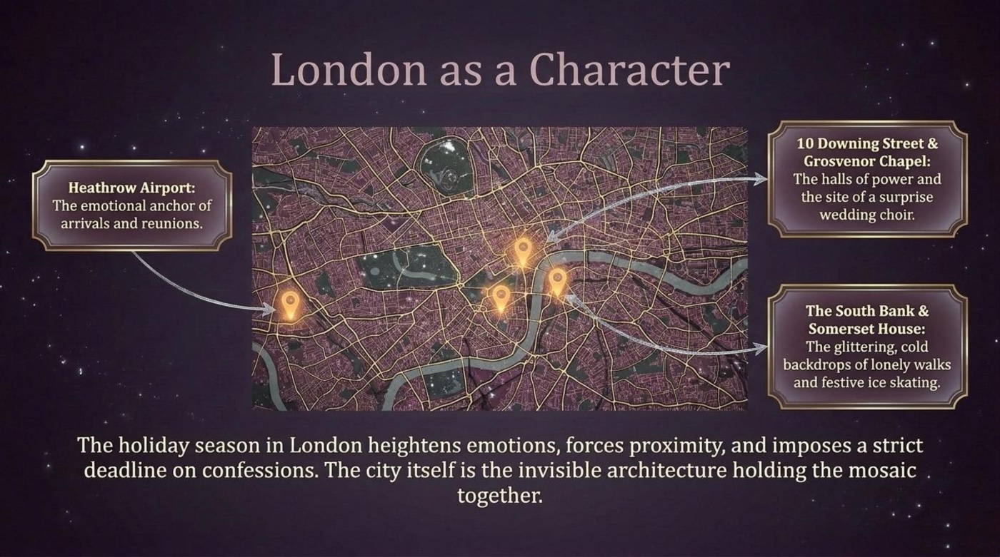
📌 The practical advice is to learn a city through its film geography. The deck’s three pins give you a ready-made mini-lesson in London English: an airport with arrivals and reunions, the halls of power with a surprise wedding choir, and festive ice skating against cold, glittering backdrops. Words like anchor, proximity, and backdrop transfer beautifully to travel conversations, presentations, and even job interviews about your hometown.
The deck takes an open old book as its image and fills its two pages honestly: one headed “The Enduring Charm,” the other “The Modern Critique.” On the charm page it lists “Earnest heart and unapologetic holiday joy,” “Masterful multi-narrative structure (three-dimensional chess),” and “Brilliant ensemble cast delivering iconic performances.” On the critique page it lists “The ‘grateful employee’ trope (women lacking agency),” “The murky ethics of unrequited boundary-crossing,” and “Lack of queer representation in the final cut.” The caption resolves the tension gracefully: “Two decades later, the film exists as a complex piece of pop culture. It is simultaneously a heartwarming holiday staple and a time capsule of early-2000s romantic tropes, prompting ongoing debate between its undeniable charm and its problematic elements.”
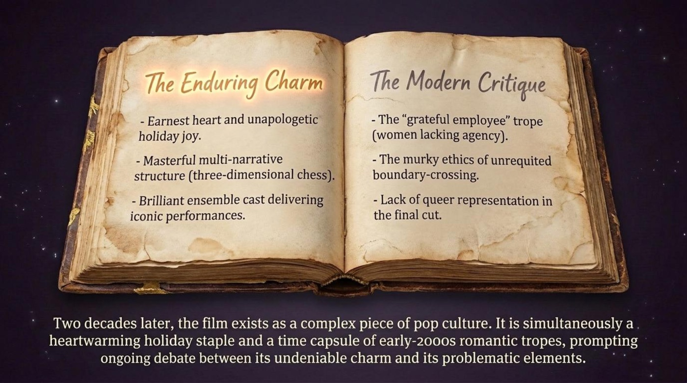
💡 This card is a gift for learners because it demonstrates the exact vocabulary of modern film criticism in miniature. A trope, agency, representation, problematic, time capsule — these are the words critics reach for when they debate any older film, and the deck shows how to praise and criticize the same work in one breath without contradiction.
The deck’s craft card, “The Unseen Threads & Melodies,” lays a marked-up movie script over old sheet music. It credits “The Score: Craig Armstrong’s swelling compositions and the strategic deployment of pop hits,” and “The Direction: Richard Curtis’s seamless transitions using matching actions to glide between storylines.” It also honors “The Lost Story: the heartbreakingly cut lesbian romance” between the school headmistress and her terminally ill partner, a storyline removed from the finished film. The card’s summary line deserves quoting in full: “The mosaic is held together by masterful editing rhythms and a sweeping score, though it remains haunted by the beautiful, diverse stories that were left on the cutting room floor.”
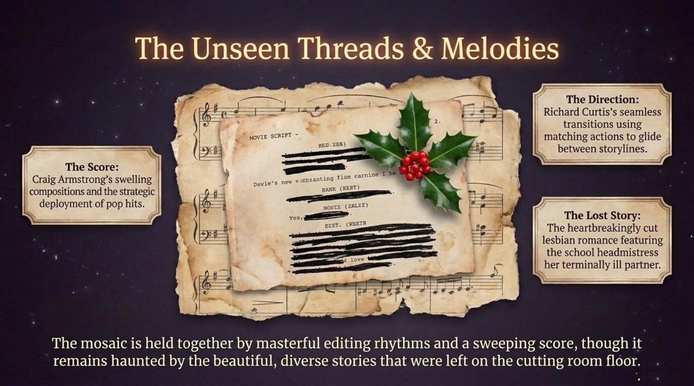
⚠️ The phrase “left on the cutting room floor” is a genuine industry idiom worth stealing — it describes any material removed in editing, and people extend it metaphorically to ideas abandoned in any project. Pair it with the deck’s other craft terms — score, transitions, final cut — and you can discuss not only films but presentations, reports, and podcasts with the vocabulary of a professional editor.
The deck’s penultimate card, “The Arrivals Hall,” freezes the famous split-flap departures board mid-spin, and its text performs the film’s ending in prose: “One month later, the threads converge at Heathrow. The spinning arrivals board mimics the frantic, overlapping climax of the film, delivering the ultimate synthesis: love is not a single, monumental event, but a million small, chaotic, overlapping reunions.” That sentence is the deck’s own synthesis, and it reframes the entire film in one stroke — greatness measured not in one grand climax but in countless small returns.
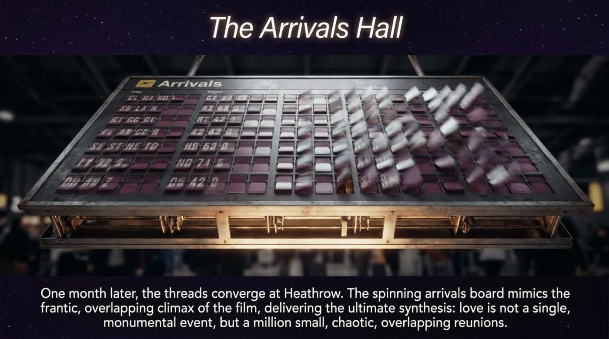
The final card, “Love, Actually, Is All Around,” looks through a frosted airport window at blurred embraces behind the glowing Arrivals sign, and it closes the lesson with the film’s bittersweet closing affirmation: “Love is rarely simple. It is often clumsy, sometimes inappropriate, and occasionally heartbreaking. But ultimately, in all its awkward forms, it is always worth showing up for.” Remember that this is the deck’s last word and its true thesis — a defense of showing up, imperfectly, on time, again and again.
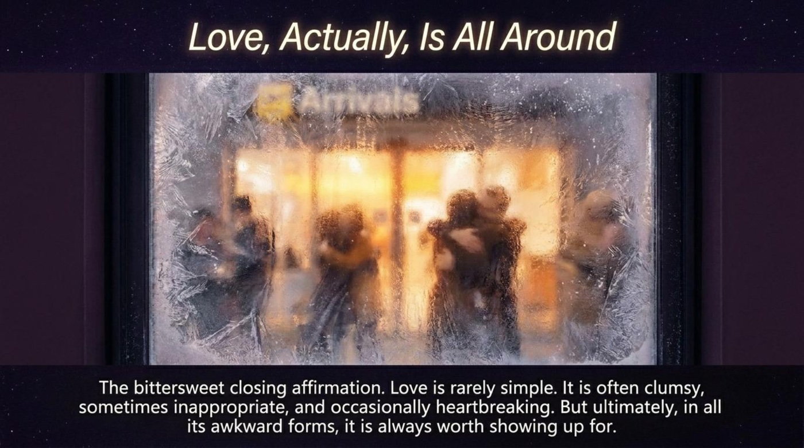
The presentation’s greatest linguistic riches are its emotion words and narrative terms, so this section gathers the eight most valuable ones and studies each in its natural habitat. Every example below is quoted directly from the deck, and every explanation shows how the word does its work. Read the plain-text entries first, and then test yourself with the flip-cards that follow — first the front side for recognition, then the back side for depth. The vocabulary connects tightly to the film’s central theme: these are the words English uses whenever it talks about affection, duty, endings, and beginnings, which makes them useful far beyond any single movie night.
It should be noted that every one of these words is portable: you can carry bittersweet to a farewell party, closure to a difficult conversation, devotion to a wedding toast, and trope to any discussion of books, series, or advertising. The film is simply the safest possible training ground, because emotions there are exaggerated enough to make the vocabulary vivid and memorable.
The cards below hide the full study entry for each term. Click or press Enter on any card to flip it over, and use the button beneath to turn the whole set at once. The front side tests recognition; the back side holds the literal meaning, the contextual meaning, a quoted example, and a short note on why the word matters.
The presentation does its most sophisticated work through symbols, and four of them organize the entire lesson. Each one turns an ordinary object — a picture, a body tissue, a telephone, a departures board — into an argument about how love works. It is important to understand these images, because they are also the deck’s own teaching method: every card takes one concrete thing and lets it carry an abstract idea, which is precisely the skill that makes English persuasive.
The deck’s founding metaphor appears in its title, “Love, Actually: A Mosaic of the Heart,” and returns in its two structural cards. The city card claims that “The city itself is the invisible architecture holding the mosaic together,” and the craft card adds that “The mosaic is held together by masterful editing rhythms and a sweeping score.” The significance is architectural: a mosaic has no single center, yet every tile is essential, and removing one leaves a visible hole. That is the deck’s argument for why a story about a widower, a rock star, a body double, and a Prime Minister belongs in one film — the picture only completes when every small, odd piece stays in place.
The character-map card annotates its glowing network with a single handwritten line: “Love is the connective tissue.” The significance is anatomical. Connective tissue is the material that holds organs in place while letting them move, and the deck chooses it over softer words like “theme” or “link” on purpose. Blood, marriage, and employment are the visible strings — “Every character is tethered to another by blood, marriage, or employment, creating a cohesive universe where actions ripple across storylines” — but the card insists that love itself is the living web underneath, the thing that lets ten separate storylines flex and breathe without falling apart.
Sarah’s story is summarized by a single recurring sound, and the deck makes the phone itself the symbol: “Every time the phone rings, romantic fantasy is pierced by the sharp, unavoidable reality of family duty.” Beside the phone on the card sits a hospital pass, captioned “The love we can’t walk away from.” The significance is adversarial and honest: the ringing is not villainous, because it carries a brother’s need, yet it reliably kills the romantic moment. The deck’s reading teaches the learner to hear the film correctly — the conflict is not love against a villain but love against love, played out in one repeating, interrupting ring.
The deck saves its strongest image for last: “The spinning arrivals board mimics the frantic, overlapping climax of the film, delivering the ultimate synthesis: love is not a single, monumental event, but a million small, chaotic, overlapping reunions.” The significance is kinetic. The board’s flaps clatter and blur precisely the way the film’s final montage does — no hierarchy, no order, hundreds of arrivals at once — and the deck reads that mechanical blur as the film’s actual definition of love. The closing card completes the thought through the frosted window: “in all its awkward forms, it is always worth showing up for.” Small arrivals, the deck argues, are the monumental event.
The quiz below tests the material in eight questions drawn directly from the presentation: comprehension of the storylines, vocabulary in context, true-or-false statements, and one fill-in-the-blank drawn from the deck’s central thesis. Click an option to receive instant feedback, watch the score counter and progress dots record your path, and use the final button to run the whole set again from the beginning. The score bar celebrates each correct answer and buzzes on each miss, with a short explanation revealed after every choice.
Your Result
0/8
The deck’s final card leaves the learner with its most quotable sentence, and it deserves to be copied into every notebook: “Love is rarely simple. It is often clumsy, sometimes inappropriate, and occasionally heartbreaking. But ultimately, in all its awkward forms, it is always worth showing up for.” The main takeaway for a language learner sits right beside it, in the film’s central thesis quoted earlier: “Love is the only cure for the loss of love.” Notice that both lines are about persistence — showing up again, trying again, loving again — and persistence is also the entire secret of vocabulary building.
Your call to action follows naturally from the material itself. Start a phrase notebook like Aurélia’s and fill it with the eight terms above, one honest sentence per word. Rewatch the film with the deck’s structure in mind — the five-week countdown, the connective tissue, the arrivals hall — and listen for total agony, levity, and closure in the dialogue. Then practice the flashcards, play the game, and retell one storyline aloud using the timeline technique from the opening cards. The mosaic of the heart, like any mosaic, is assembled one small, deliberate piece at a time — and every piece you place makes the picture clearer.
The complete presentation that accompanies this lesson opens in a new tab: